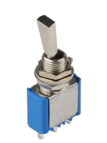
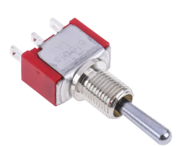
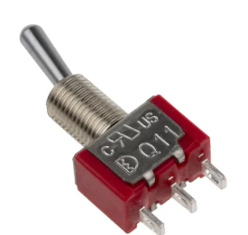
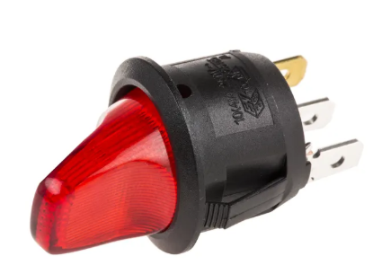
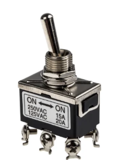
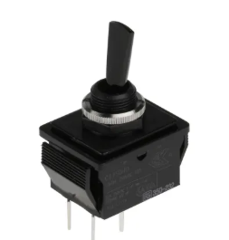

What is Toggle Switch?
An electrical switch that activates by a moving lever or a handle forward and backward to open
or close an electrical switch is known as a toggle switch. These switches are also called toggle
power switches or joystick switches. These switches are versatile devices, so they can be
utilized with any electrical application.
Generally, switches are operated manually, so in
many electrical circuits, the toggle switch plays a key role like a simple ON/OFF switch. The
toggle switch function is to control the flow of current to a device or within a device from the
power supply by a lever. The toggle switch symbol is shown below.
- Pin1 (A): This is the first output pin.
- Pin2 (COM): This is the input pin.
- Pin3 (B): This is the second output pin.
Pin Configuration
- Manually operated using a lever
- Maintains position after switching
- Used for mode selection (ON/OFF)
Toggle Switch Types
- On-On Toggle Switches: On-on switches control two devices; each position of the
switch activates one of the two. They are also known as changeover switches.
A variant model - the On-(On) switch - combines a standard click position with a spring-loaded one which will snap back if not held in position.

- On-Off Toggle Switches: This is the most basic toggle switch design, providing simple, binary on-off control for power supplies. On-off toggle switches usually make an audible clicking noise when moved from one position to the next. They are also known as positive on-off switches.
- On-Off-On Toggle Switches: On-off-on toggle switches are variations of the on-on design. They add a third, neutral off position in the centre. In (on) off (on) switches, the off position is the default resting position and both on positions will click back to this once released. 

Contact Configuration
- Single Pole Double Throw (SPDT): A single pole double throw switch changes the
direction of voltage, allowing a single current to be switched between two devices,
activating or deactivating them. They are used in car engines and many other settings.
These are also known as two-way switches or on on toggle switches. Another variation is the three-position or three-way switch, which can be used to control a single device - for example, a light switch - from two different locations.

- Single Pole Single Throw (SPST): These are basic on-off switches - a single incoming current is directed towards a single device in an open or closed circuit. This is the common design seen in light switches. 
- Double Pole Double Throw (DPDT): Double pole double throw switches are in effect two
on-off switches operating in conjunction with one another. They allow the voltage supplied
to a particular device to be varied. Uses include reversing switches in electric motors.
Both on-on or on-off-on switches are DPDT. They are also known as four-position or four-way switches.

- Double Pole, Single Throw (DPST): Double pole single throw switches allow two different circuits to be switched on or off simultaneously, enabling easy control of two devices operating alongside each other. 